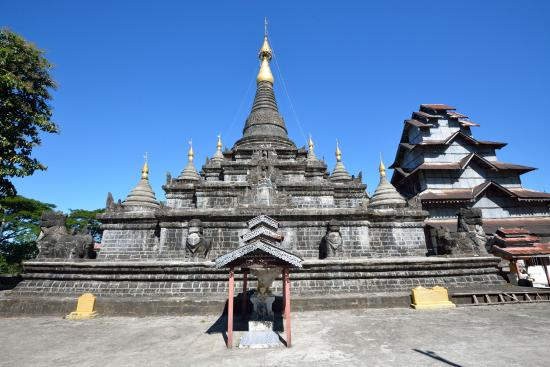

Law Ka Man Aung Pagoda
Lawka Man Aung Pagoda is known to be one of the five most revered "Man" paya of Mrauk U. This Pagoda is known to
be one of the five most revered pagodas in Mrauk U. The five revered "Man" payas of Mrauk U are Lawka Man Aung.
Zeenat Man Aung. Sakkya Man Aung. Mingalar Man Aung and Yadanar Man Aung. In Myanmar known as "Man Ngar Par".

The architecture of this pagoda is in the form of four steps. The base step is a square shape with four statues
at each corner. From the second to the topmost step. there are small pagodas at each corner. Inside the pagoda.
there is a 12 feet high Buddha image made of stone.
In A.D 1676. King Oakka Balar became a monk in this pagoda's compound and at such a time. was also called
Lawkamu Pagoda. This pagoda was also built by Candathudhammaraza (1652-1674 A.D) in 1658 A.D. It stands on a
flat ground. The shrine was constructed with stone blocks. well hewn and cemented. It is square at the base.
each side measuring 74 feet; the first four tiers are also square; in the center of each side of the tiers
stands a porch containing an image of the Buddha. The sides of the porch are made of stone slabs; the
architectural design is similar to that of the Laungbanpyauk Pagoda. There are traces of ornamental designs on
the face of the porches. A guinea pig guards each corner of the lowest tier.
On each corner of the first four tiers stands a small circular pagoda. solid and without niches. From the garbha
upward the central spire is circular; the apex is crowned with an iron hti (umbrella) once gilded and still in
good order. The east facade of the pagoda has a portal 20' high. protruding 2' from the main wall. a vaulted
passage 4' 8" wide. 16' high. and 29' long leads to a chamber in the center of the pagoda. It contains a stone
image of the Buddha 12 feet high. sitting cross-legged on a stone alter. The ceiling is a hemispherical dome and
the apex is 16 feet above ground.
The pagoda has a wall measuring 300 feet around the base and 100 feet high.The old roads to Vesali and Mahamuni
begin here. These roads are still known as the gold road and the silver road.